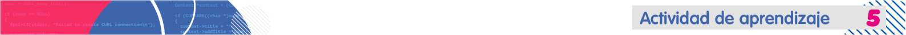

Practica y repasa el concepto de función.
Acciones de aprendizaje
1. Revisa los videos en los que recordarás el concepto de función y cómo es su implementación en Java.
- Concepto de funciones con Bedoya, A. [XACA RANA]. (2017). 10 Curso Programación JAVA Funciones - Functions. [Video].
- Concepto de Caja Blanca Negra con Bedoya, A. [XACA RANA]. (2017). 11 Curso Programación JAVA Caja Negra - Black Box. [Video].
- Concepto de Caja Blanca con Bedoya, A. [XACA RANA]. (2017).
12 Curso Programación JAVA Caja Blanca - White Box. [Video].
2. Al programa de calculadora básica realizado en la Actividad 3, editalo y realiza las operaciones de la cálculadora, implementando una función para cada operación, agregue además, las funciones que permitan cálcular la fórmula del estudiante y los números primos, las cuales se deben adaptar de los siguientes videos:
- Fórmula del estudiante con Bedoya, A. [XACA RANA]. (2017). 20 Curso Programación JAVA Fórmula del estudiante - Cuadratic formula. [Video].
- Números primos con Bedoya, A. [XACA RANA]. (2017). 17 Curso Programación JAVA Números primos - Prime number. [Video].
3. Comparte el funcionamiento de la calculadora con tus compañeros:
- Realiza un video de máximo 5 minutos en donde se vea el código y funcionamiento de la calculadora con la implementación de funciones.
- Sube el video a una plataforma como YouTube, OneDrive o Drive y comparte el enlace en el Foro calculadora con funciones. Recuerda poner los permisos como publicos para poder tener acceso al video.
Formas de trabajo
-
Individual: el estudiante es responsable de su proceso de aprendizaje y de las actividades que realiza.
Tiempos (Semana 2)
- Trabajo autónomo del estudiante: 12 horas.
- Acompañamiento docente: 4 horas
- Evaluación formativa:
Comprende el uso de las funciones como estrategia para la optimización del código.